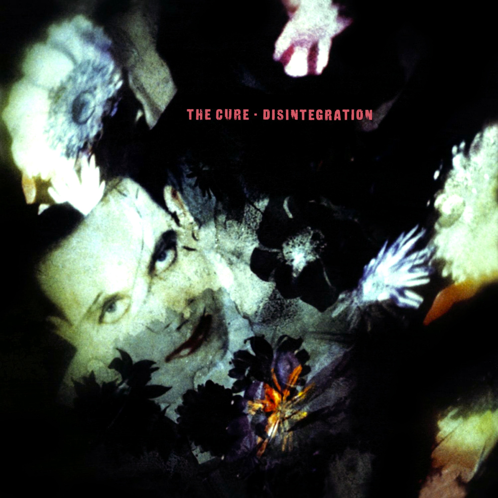
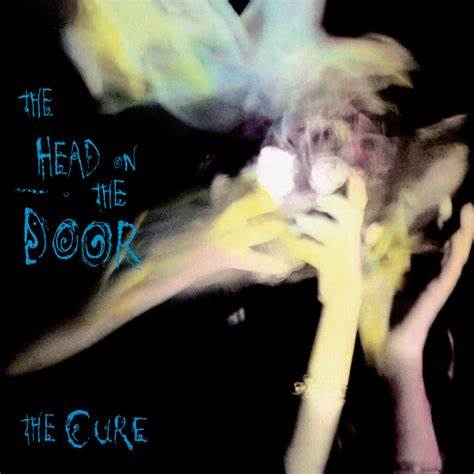
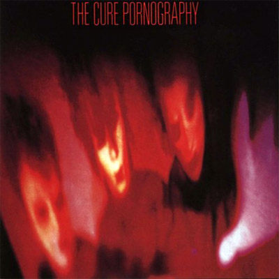
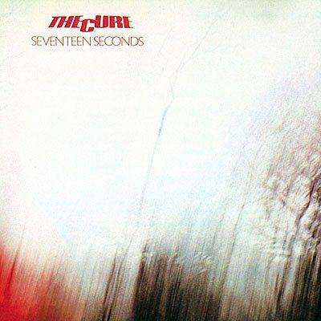
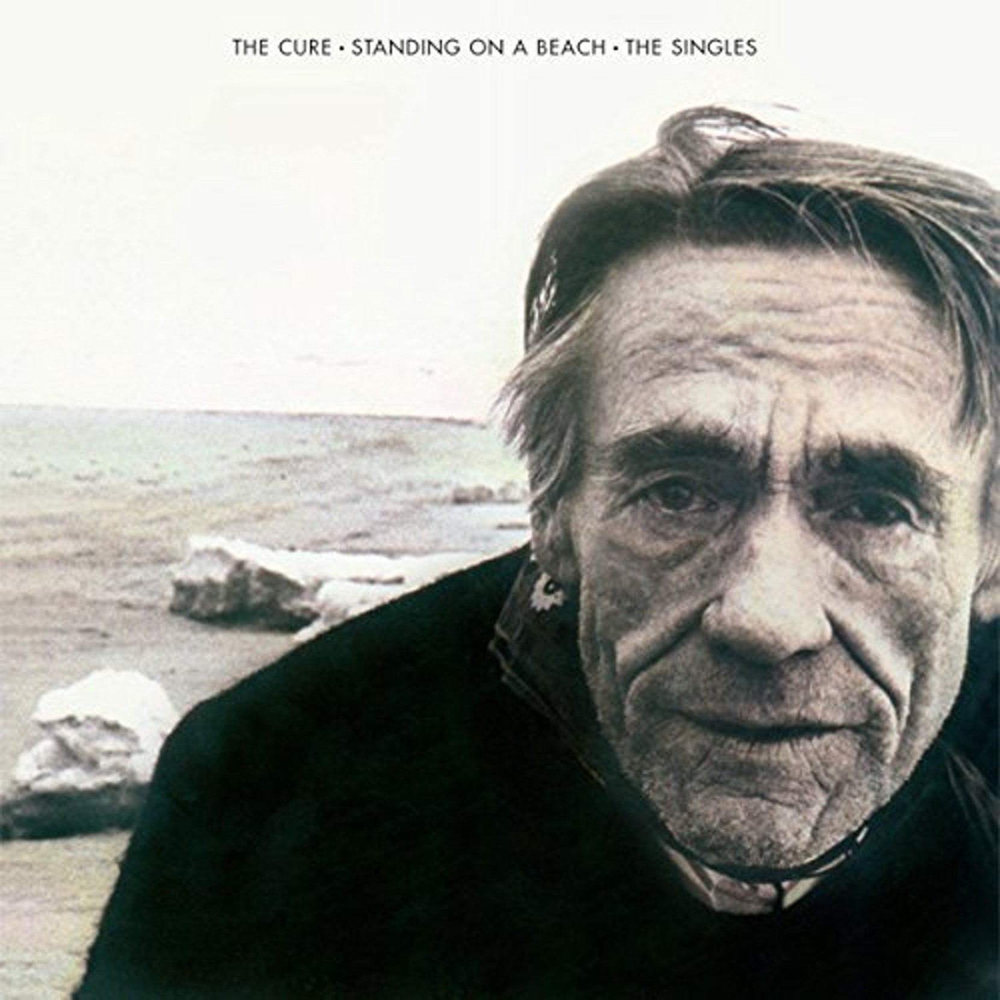
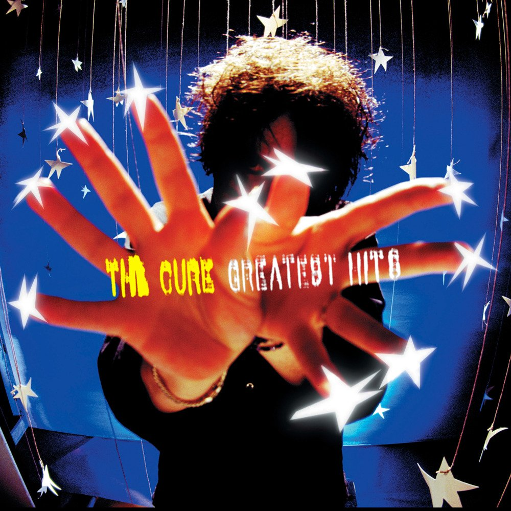

|  |  |  |
|  |  |  |
"The story of The Cure is the story of the continuous struggle between Robert Smith and his desire to remain unaware that there is light at the end of the tunnel. You can feel that there's always a luminous element among all the gothic, gloomy darkness that surrounds their songs. It could be the overall tenderness on "Pictures Of You", the beautiful layered guitars on "A Forest", the innocent beauty of the melodies on "Boys Don't Cry" or the bittersweet hope on the lyrics of "Friday I'm In Love". The band has covered (and sometimes, pioneered) many of the most representative phases of the British '80s underground scene, and even made a definitive impact on the visual aesthetic of an entire generation of music fans. Their first works are a milestone among post-punk, gothic rock music and are the archetype for tons of bands that came later. The same goes for their college rock mid-'80s period and the guitar pop exercises of their most popular years. Their albums and singles were always a lesson in melody mastery and emotional lyricism, despite the fact that Smith was, actually, expressing his own angst feelings through the songs themselves. This particular combination of honesty and musical beauty has made The Cure one of the most iconic bands of a particular decade and one of the best products the British Isles have ever brought us."